Published: 2023-10-11
Original link: https://www.cnphotos.net/academy/show-153.html
■ Interviewed | Huang Hong
■ Reporter | Zhang Yue
■ Editor | Zhou Yimeng
■ Editor-in-chief | Chen Xiaojun
The China Photo Network Top Ten Photographers award selects the best photographic work of each year. It encourages and honors photographers who achieve outstanding results in artistic photography. It inspires photographers to create more work. The work should reflect the voice of the new era, show the struggle of the people, lift the national spirit, and nurture noble feeling.
The 2022 (fifth) China Photo Network Top Ten Photographers award went through several steps. It began with a selected works exhibition, a public vote, and a final review by a jury of well-known photographers and experts. The jury then published a public notice. These steps selected the Top Ten Photographers and the nominees for the year.
The award also aims to bring out and show the classic work and creative path of each photographer. It builds a wider space to show work and a platform for exchange. China Photo Network will soon send reporters and editors to interview the Top Ten Photographers. The interviews will tell the stories behind the work. Later, we will edit and publish a collected volume on the Top Ten Photographers.
This issue features an interview with the photographer Huang Hong.
Editor's note
Preface
The photographs of Huang Hong carry a deep mood. They hold a silent, riddling poetry. Each image seems to breathe. Breathing is a key sign of life. It looks silent, yet it has already seen through the fate of ordinary people under the great wheel of the era.
Her work follows the rise and fall of the steel industry, the stretch of the coastline, the resettlement of people in Xihaigu, the ecological change of the grassland, and the revival of old villages. In these subjects, some things have already become tears of the age. They fade away with time and move the reader. Other things show new life. After the work of several generations, they bloom with fresh growth.
The concrete subjects in her work include sleeping steel giants, the breath of boiling furnaces, the heavy breath of steam engines, and the breath of twisting flame. There is the faint breath of the sea when you smell it but cannot see it. There is the breath of the bright moon high over the grassland. There is the breath of an old man sitting alone at the village gate at dusk. There is the breath that fades like a comet. It is silent as iron, silent as a fish, silent as stone, silent as sleep, silent as a riddle. It is a language that breaks through boundaries. It makes the reader let go of clear feeling and sink into a flow of awareness that words cannot reach.
Zhang Yue
October 10, 2023
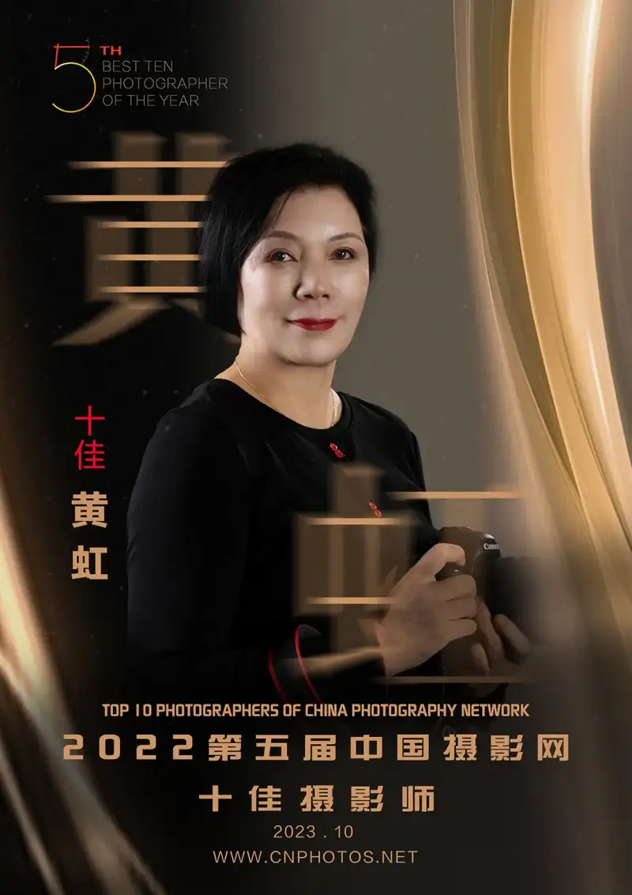
Huang Hong is a member of the China Photographers Association and a signed photographer for China Photo Network.
Photography is a way of life. I like to record life through photography.
October 2021: The Xihaigu series was selected for the 28th China Photographic Art Exhibition. The Grassland Is Near, the Sound of Hooves Is Far took part in the 9th Dali International Photography Exhibition and won the DIPE International Photography Festival Presidents Alliance Award.
October 2020: The Xihaigu series won the Gold Collection Award at the 3rd China Ethnic Photographic Documentary Biennial.
December 2018: the Thick Earth series was selected for the 17th China International Photographic Art Exhibition.
September 2017: the Distant Mountains series took part in the 3rd China Phoenix International Biennial.
May 2016: the Fragments of the Past series took part in the 2nd China Tiexi International Industrial Photography Exhibition.
December 2015: the Distant Mountains series was selected for the 16th China International Photographic Art Exhibition.
Zhang Yue, reporter for China Photo Network (below, Zhang Yue): What did you study first? What is your job? In what year, and under what circumstances, did you first take up photography?
Huang Hong, Top Ten Photographer of China Photo Network (below, Huang Hong):In college I studied accounting and auditing at the Dongbei Institute of Finance and Economics. I have worked at an accounting firm ever since.
I like to travel and record as I go. The photos in my early travel notes were plain. They came straight from a compact digital camera. Around 2007 I saw other people's photos and they looked much more refined. So I bought a professional single-lens reflex camera (a DSLR, a camera with interchangeable lenses). I enrolled in the Beijing Photography Correspondence School and began to study in a formal, systematic way.
Zhang Yue: What subject did you first photograph when you began creative work? What was the first work you published?
Huang Hong:My real creative work started after I got my professional camera. I followed teachers who liked industrial subjects to photograph factories. At first I shot local plants, such as the Dalian locomotive works, Dongbei Special Steel, Huarui Heavy Industry, and Dayuan. Later I went to plants farther away: Benxi Steel, Ansteel, Magang, Shandong Steel, Laiwu Steel, Shougang, Wuhan Steel, and Taiyuan Steel. I also recorded the Dalian Metro lines one and two from construction to completion. I shot the sites of old factories that had been shut down or merged. Later I went with friends from Beijing to Yuxian in Hebei, to photograph rural subjects.
I sent my work straight to exhibitions. The first time was 2013. My series Images of a Steel Works took part in the first Tiexi International Industrial Photography Exhibition. I shot it at the Benxi steel plant. The furnaces there were still burning bright at that time.
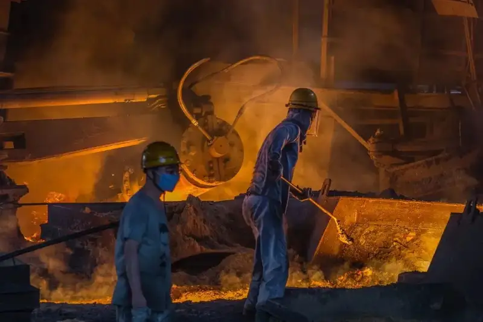
Blast furnace No. 9, which Chairman Mao visited twice in the 1950s
August 2011
First Steel Plant, Maanshan Iron and Steel Company
Zhang Yue: It seems your real creative work began directly with a series. Was Images of a Steel Works your first series, the one in the first Tiexi International Industrial Photography Exhibition? How many times did you shoot it? How long did it take? How many frames did you make? How many did the exhibition select? What did this mean to you?
Huang Hong:Yes. I shot that series at the Benxi Iron and Steel Group plant in March 2013. I went twice within one month, about ten days apart. I took two to three thousand frames each time. The show selected ten. The exhibition gave me great confidence and encouragement. It made me love industrial subjects even more. I would go to local plants or plants far away. No matter the distance, I would fly there. I shot busy workshops and the old sites left after a move. Any industrial subject was worth the hard trip. Effort brings reward. Three years later, in 2016, another industrial series, Fragments of the Past, took part in the 2nd Shenyang Tiexi International Industrial Photography Exhibition.
I live in the old industrial base of the Northeast, so I pay special attention to industrial photography. I feel it is a subject that commands my respect. In front of the hot steel furnace, in the noisy workshop, and in the mine tunnels a hundred meters below ground, the camera records how industry produces and how workers do their jobs. I want the cold heat, the colors, the character, and the feeling of industry to become the goal of my work. I want the care, warmth, pride, and reverence of industry to become the home of my own feeling.
Zhang Yue: As a woman, how did you become so interested in steel plants? What important meaning do you find in shooting industrial photography?
Huang Hong:I had never worked in a large factory, so I always longed for the hot scene of a big plant and a big workshop. I feel a special excitement each time I enter a workshop to shoot. When I put on a safety helmet and work clothes, a sense of pride rises in me. But now the old plants left after a move look abandoned. Some old factories have been reborn. One example is Bingshan Huigu. It was rebuilt from the old Dalian Refrigerator Factory. The rebuilt site has a craftsman street in an industrial style, the Bingshan Cultural and Industrial Exhibition Hall, a cafe inside a sand silo, and many small industrial objects along the road. It is one of the projects I like to follow.
What recedes is the old plant, childhood, memory, and the youth and later years of the older generation. The red-hot age has gone, but the monument of time stands forever. Each old plant drove history forward. It carries the lasting honor of the republic. The growth of the republic depends on this industrial heritage. Today we must find the spirit of industrial work inside it and let it shine again.
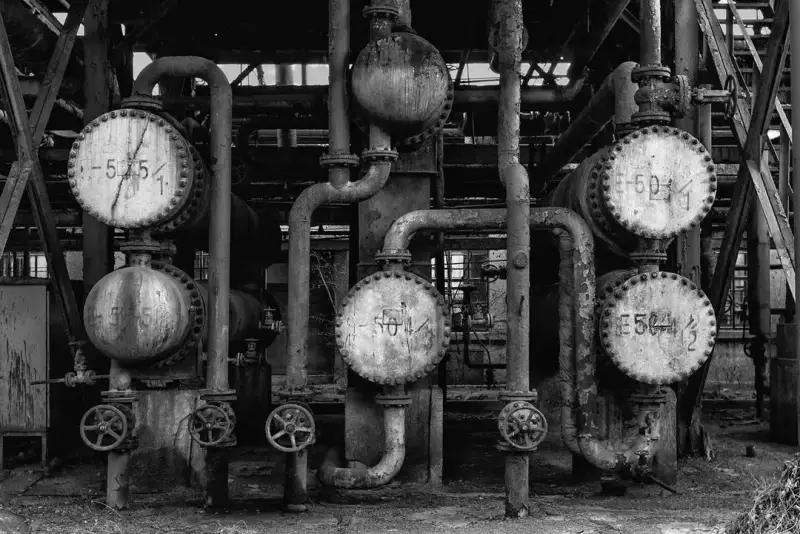
Former site of the No. 1 Oil Plant, Fushun Petrochemical Company, Liaoning
December 2013
Zhang Yue: Your series Ukraine of the Past was shot in August 2016. Your attention there was broad. It covered architecture, art, and people, and it touched on Ukraine's independence and its civil war. Now the conflict between Israel and Palestine grows worse. In 2013 you also shot photos in the Old City of Jerusalem, at the Western Wall. When you look back at these photos, what do you feel?
Huang Hong:The two series on Ukraine and Israel only want to tell people to wish for world peace and to value the stability of the present. In Kyiv, on a corner of Independence Square, I saw some graves. A local citizen held flowers and spoke in a breaking voice about the people who died in the civil war. Six years later, who could have foreseen that the war between Russia and Ukraine would still burn? Once-glorious historical buildings now suffer the ruin of war and time.
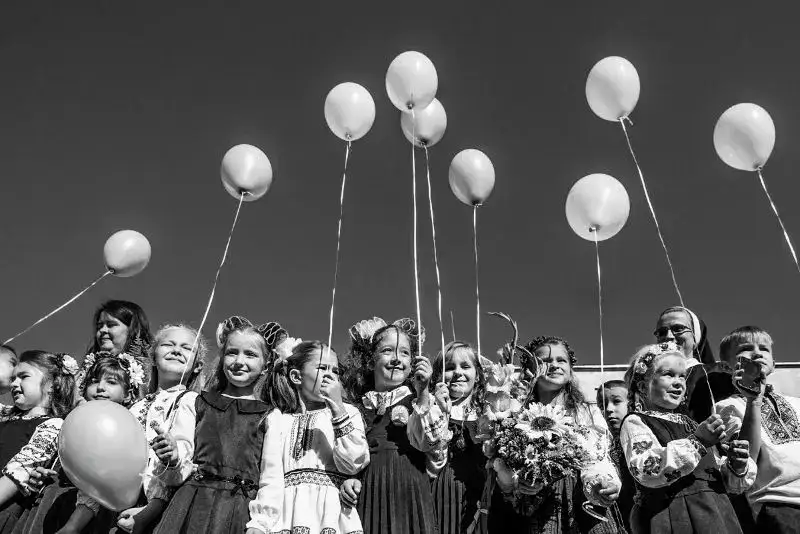
First-grade pupils at the opening ceremony of the school year
September 2016
Lviv, Ukraine
I also did street photography (shooting everyday scenes in public places) in the Old City of Jerusalem in Israel. I saw many Orthodox Jews. Most wore thick beards and two curled locks at the side of the face. They dressed in black coats and hats. They walked with an easy, elegant step, and they carried themselves like nobility.
War cruelly destroys what is good on both sides, whichever side is right. In a world that grows more divided, I hope people will love and help each other. I hope they will not be torn apart, and that they will build a new world.
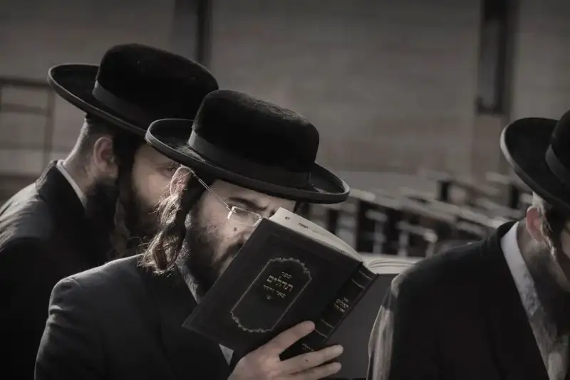
Jews praying and reading at the Western Wall
April 2013
Jerusalem, Israel
Zhang Yue: You have shot so many abandoned old factory sites. I think these images carry a sense of tragedy. They look like silent giants that slowly age and die, tears of the age. Do you feel an attraction to ruins?
Huang Hong:People have always been drawn to abandoned ruins. The wish to know more about their past pushes archaeologists, artists, and scholars everywhere to study the remains of ways of life that have vanished. They try to catch their mystery and beauty.
One example is the American photographer Matthew Christopher. His book Abandoned America began as a study of the rise and fall of the state hospital system. It quickly grew to cover abandoned factories and industrial land, schools, churches, power plants, hospitals, prisons, military sites, hotels, resorts, and houses. Over the past ten years, Christopher has recorded American ruins through his writing and photo books. He explored the burnt remains of the Doyle Hotel, the rusty cells of the Essex County Jail annex, the solemn but changed churches, and the strange, ruined walls of the Newcastle Elks Lodge. These architectural treasures, left to nature, often vanish from the world for good.
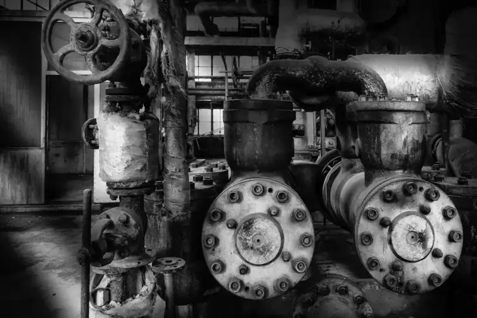
Former site of the No. 1 Oil Plant, Fushun Petrochemical Company, Liaoning
December 2013
Zhang Yue: Are The Village Beneath the Fortress and Shang Suzhuang Village the same place and the same subject? Can you introduce the two series separately? What is special there? How many times did you go? How long did you stay? How many photos did you take? Why do you photograph villages? How has this series on rural life affected your own work?
Huang Hong:Both Shang Suzhuang Village and The Village Beneath the Fortress are villages in Yuxian, Hebei. The Village Beneath the Fortress covers Shang Suzhuang and also Xingjiazhuang, Beikou, and Xigaozhuang.
The Village Beneath the Fortress is a ten-year project. It is also a changing project. These villages show a clear model of rural revival. They sit near the main road, almost in a line. I drive each time I go. I believe the simple heart of a village does not live in its old houses. It lives in the hearts of the villagers. The village has turned commercial, but the people have not. Beside every old house there is always a new building. Some even have a car parked outside. When villagers earn money, they build new flats, but they cannot bear to tear down the old house. The old house is memory. The new flat is hope. For the villagers, commercialization is good. But the point of a village is not to give city people something to feel nostalgic about. It is to let the villagers live well. In ten years I have come to Yuxian eleven times. I did not see much deliberate luxury. I felt mostly the simple heart of the place. I saw villagers whose lives are improving, and young people who give quietly. This place has redefined the most beautiful village in my mind.
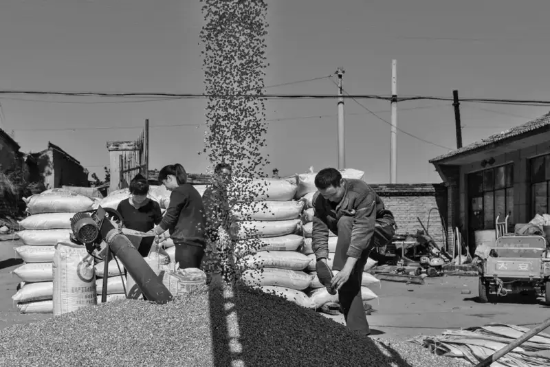
Villagers bagging corn as they winnow it
September 2015
Shang Suzhuang, Yuxian, Hebei
Shooting The Village Beneath the Fortress was a way to slow down. I made most of the images on holidays. Each trip lasted about ten days. I took sixty thousand frames.
Shang Suzhuang is a model village for rural revival. Today, as villages urbanize, many villages change quietly. Many villagers move to the cities. Shang Suzhuang is no exception. It developed an emptying-out problem. But as local tourism grows, some villagers have stayed and come back.
In short, these villages are not large, but they hold a dense structure. This is not only because each person here is a real person with a story. It is also because the village, a traditional form of human settlement, is now in the middle of change. The village seems to shrink, and it seems to spread. My starting point was not to prove one fixed conclusion. It was to look at the ties between people, the ties between people and the village, and the ties between villagers and modern society. This plan is large, and its threads cross and run together. But as the images pile up, they seem to bring a whole picture into view.
Teacher Hei Ming's book Xin Yaozi in 100 Years influenced me a lot in my rural work. His images and his writing both carry a plain humanist feeling. As I shot more, I grew more interested in the lives of farmers. I always feel very relaxed walking through the countryside and the fields. I enjoy that pleasure. In photography, I want my subjects and my forms to keep changing.
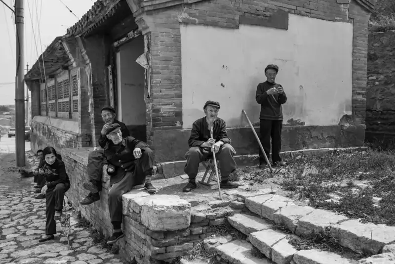
An old man basking in the sun in front of the old stage
May 2014
Shang Suzhuang, Yuxian, Hebei
Zhang Yue: You have many works shot in faraway places. Do you also pay attention to Dalian, where you live?
Huang Hong:I have always lived and worked in Dalian, and I have always shot the subjects around me. At One Side of the Sea and Sea or Shore both record things close to Dalian. The two series span nearly fifteen years. They are my look at one coastline from different angles.
These images are the quiet words I mutter as I walk and look by the sea. They are fragments of memory I pick up while walking alone. For a long time I often strolled along the shore. Through constant thought, review, and shooting, I wanted to deepen my understanding of this coast of the Yellow Sea and the Bohai Sea. I also wanted, through my effort, to build or fill in my own photographic meaning of the shore. Humans have lived on this coast since six thousand years ago. It is the place where our ancestors lived and multiplied. At some point, a boom in real estate and city expansion began here. Trucks loaded with slag left long trails of dust. Tall buildings rose one after another. Scenic avenues appeared. Proud sets of economic data were born. I wonder: if the hills are gone, the sea is gone, the farmland is gone, and the villages are gone, then turning the sea to land may help a short-term economy. But in the long run, does this huge ecological change hide a crisis? Can human growth last? Now I am working on a new series called Another Place, My Home. It expresses the similarities and differences between my hometown Dalian and other places.
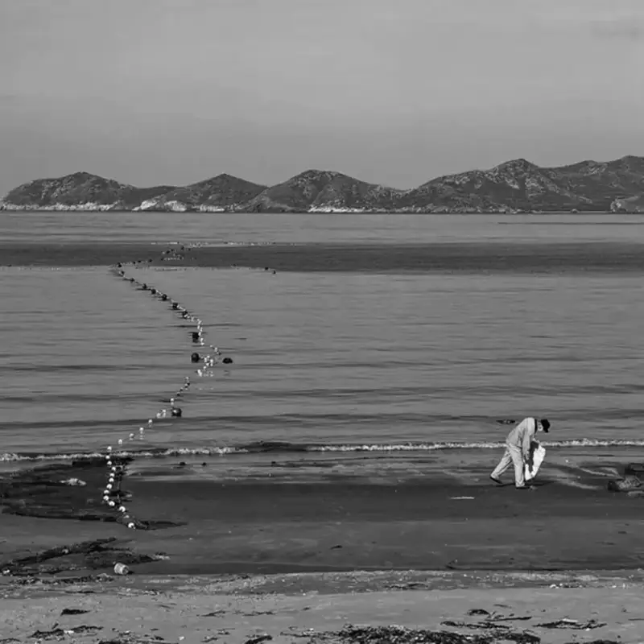
A person collecting shells by the sea
September 2020
Daheishi bathing beach, Dalian
Zhang Yue: In this black-and-white series, some frames use a square composition and others a horizontal one. Why did you shoot it that way at the time?
Huang Hong:I felt a square frame worked better for some scenes. That is how the different compositions came about.
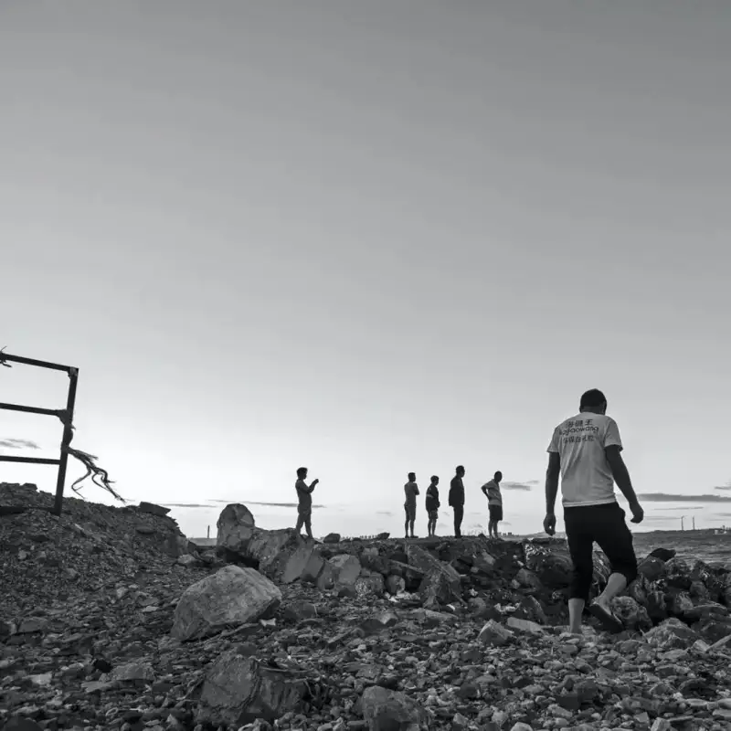
Migrant workers from Jilin relaxing by the sea after work
October 2017
Donggang Business District, Dalian
Zhang Yue: I see another series of yours called Ten Years at the Fishing Port. It includes landscape, people, and folk custom, and you shot it for ten years. Where is the fishing port in these works? Is it all in Dalian? What is special about it? Apart from the photos, I have not seen any other story.
Huang Hong:Ten Years at the Fishing Port is a stage summary of my work on the fishing ports near me. It mainly records how the fishing ports, fishing villages, and fishermen around Dalian have changed over more than ten years.
Dalian has more than two thousand kilometers of coastline. Along the shore I often carry my camera, slow my step, and walk into fishing villages and farming homes to see the stories that happen there. Fifteen years have passed in a flash. The shore changes, and the things along it change. The lives of the people on the shore change. The scenes in my lens, the feelings in my heart, and my thoughts on this wide, misty sea all change too.
Zhang Yue: I see you shot Distant Mountains, Thick Earth, and Xihaigu, works about Xihaigu in Ningxia. Many people have photographed Xihaigu over the years. Wang Zheng and others shot it very well, and their work had wide influence. What made you decide to photograph Xihaigu, and to shoot it so well? Why do so many people make good photos there? Does the subject itself carry emotional force? Is the natural scenery vivid? Or do you feel your own command of the image has reached a level? Before you shot, did you worry that your work would look like other people's?
Huang Hong:Following Xihaigu was a chance meeting. I remember my first trip was in July 2013, under a burning sun. I was shocked by the poor landscape of gullies and empty land. The warm, simple villagers of Xihaigu also moved me. At once I felt I should come back. In this way I traveled to Xihaigu for nearly ten years. Each visit felt like coming home. The villagers accepted me. They told me about the big and small events in the village, who was marrying, who was building a new house, who had a baby. If I had time, I would go over.
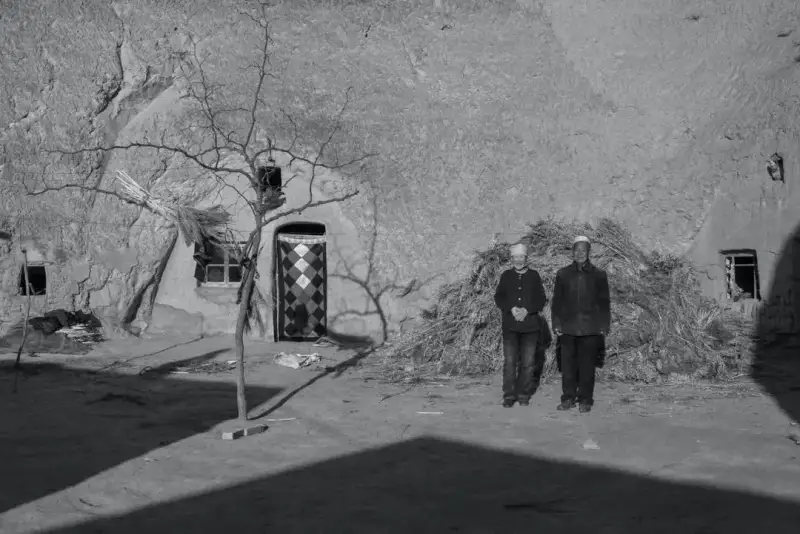
Under the national targeted-poverty and concentrated-relocation policy, the old couple Ma Fengcheng and Ma Xiulan had to move to a new village. They stand for a farewell photo in front of the old cave dwelling where they lived.
December 2014
Tongxin County, Ningxia
At the same time I focused my lens on village homes, fields, trees, mosques, dry land, distant mountains and thick earth, and on the devout, patient villagers. These lasting images of Xihaigu became the flesh and blood of my work.
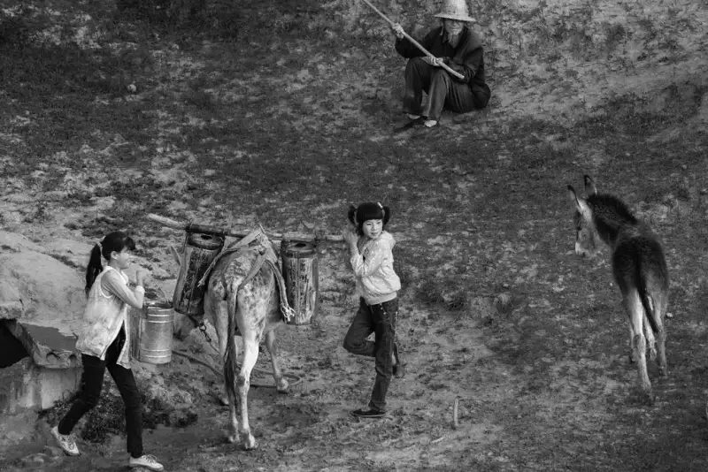
Children carrying water down the hill on a donkey after school. This way of life has now ended.
June 2018
Nanshan Village, Haiyuan County, Ningxia
The people of Xihaigu carry a backbone and a dignity. They live with great purity. They feel a deep bond and call toward the land, food, and water. They hold a will to face hardship, overcome it, and live well. They are at peace with poverty, and a positive, upward desire rises inside it. Even if the land is as barren as a ruin or as poor as a desert, they give their whole hearts to value their lives, love their land, and keep their faith.
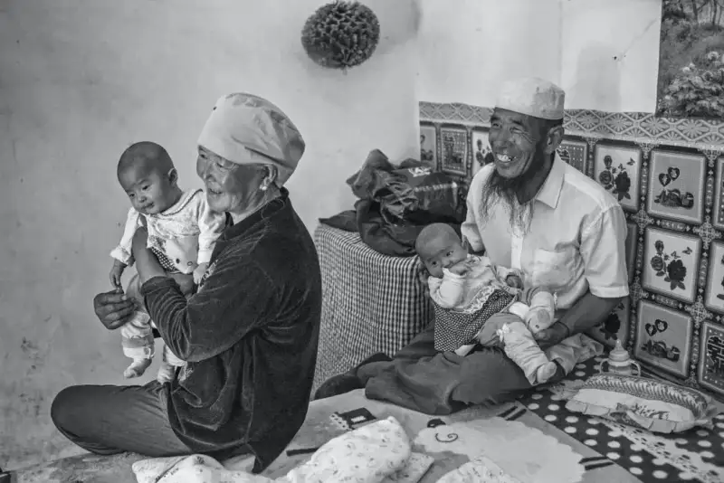
Delighted grandparents hold their twin grandsons, just one month old.
July 2014
Haiyuan County, Ningxia
When I first came to Xihaigu, I did not think about how successfully my predecessor Wang Zheng had already shot the subject. I believed my Xihaigu would be quiet, plain, pure, neither humble nor proud, and content with little, a new Xihaigu different from Wang Zheng's. Shooting Xihaigu also let me see an ideal world deep in my own soul.
Shooting Xihaigu was not only my experience. It was also a trial of my life. I used my camera to record the world-famous miracle of lifting Xihaigu out of poverty. I crossed its hills and ridges countless times. I followed the changing lives of its villagers with my lens.
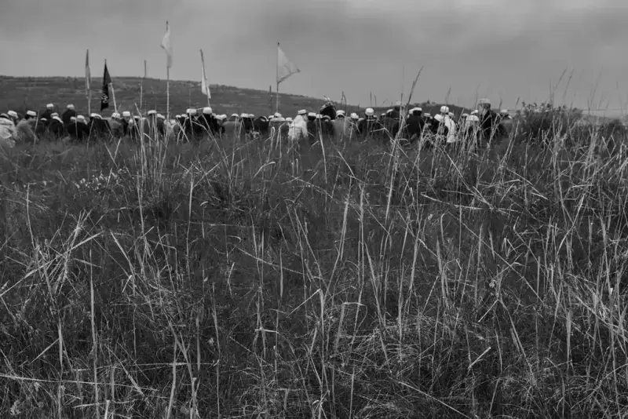
Villagers at prayer during the Eid al-Fitr festival
June 2016
Jiucai Township, Haiyuan County, Ningxia
Zhang Yue: Your series Grassland 2010-2020 took a full ten years. Before 2010, many influential photographers and works already existed on the grassland. For example, Wang Zhengping and A Yin of Inner Mongolia produced work of the highest quality. They have joined many shows and contests at home and abroad, won many awards, and published photo books. Why did you still go on shooting? Did you not worry that your work would repeat theirs? Did they inspire you? Did they influence your creative work? What did your ten years on the grassland bring you?
Huang Hong:The grassland is my dream, my longing, a pure land in my heart. When I first shot it, I simply loved the great grassland, like the song I Have a Date with the Grassland. As I kept shooting, I no longer only loved its beautiful views and its herds of cattle, sheep, and horses. I slowly went deeper, to the herders who have lived with the grassland for generations. I recorded the stories of how their ancestors lived on this grassland.
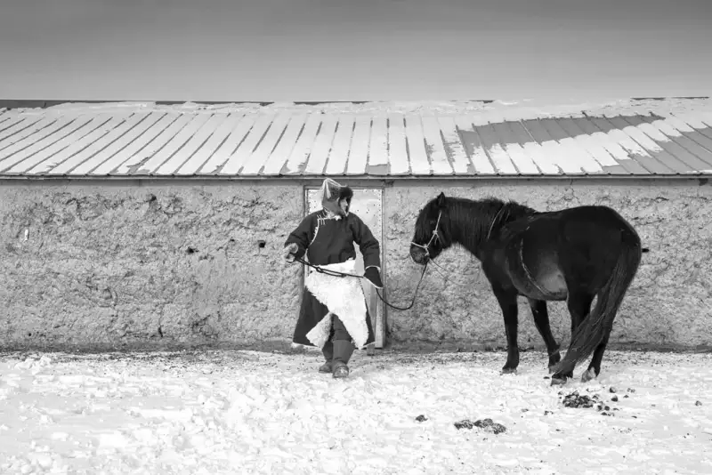
The Grassland series
A herder with his beloved horse
December 2019
Xilingol League, Inner Mongolia
One example is the series The Nation's Children. During the three-year famine, orphanages in the Yangtze River region took in a great number of small children. Because of limited conditions, the children were sent to the better-supplied North. Inner Mongolia took in more than three thousand orphans at that time. The Mongolian language strongly avoids the word orphan, so people called them the nation's children. After decades on the grassland, one woman already felt she was a true herder. Her work on the pasture was no less than that of her Mongolian husband. In recent years I have kept following this series.
While shooting the grassland series, I learned from teacher Wang Zhengping in words and in practice. He explained how Mongolian people live on the grassland. I feel that no matter how others shoot it, the great grassland in my mind belongs only to me. Going to shoot it satisfies my dream of being close to the grassland and recording it.
Zhang Yue: Did you shoot the ten-year grassland series on film or digitally? In color or in black and white? If you shot in color, why did you give up color and choose black and white to show the green grassland of Inner Mongolia?
Huang Hong:At first I shot some on black-and-white film. From 2015 I switched to the human-life series on the grassland. I shot almost all of it in color with Canon cameras. I especially like to use black and white to show the vast grassland in winter. I feel the black-and-white tone better expresses the complex longing in my heart. It fits the heavy feeling inside me better. I think black and white better records, in a plain way, the simple life of the nomadic people on the Inner Mongolia grassland.
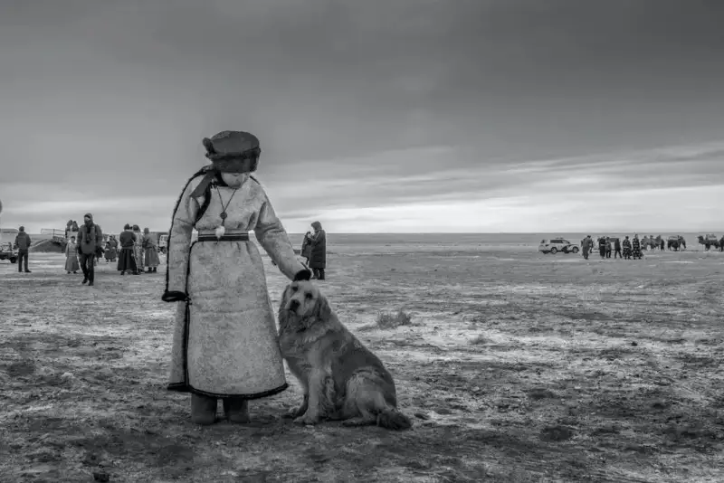
A girl and a dog at the winter Naadam fair.
January 2018
Xilingol League, Inner Mongolia
Zhang Yue: What influence does the ten-year grassland series have? Do you still follow and photograph the Inner Mongolia grassland?
Huang Hong:In fact, this is only an inner expression. As teacher Wang Zhengping said: the visual language in a photograph answers the feeling in the heart, and it expresses the grassland I have known, a grassland rich in mood. I have always tried to show the grassland in my heart through images. This is also my own inner feeling. It is only that each person observes in a different way.
When I first set foot on the Mongolian grassland, I could not have imagined an eleventh trip. In the future there will be a twelfth, a thirteenth. Loving the grassland is like a fixed belief of mine.
Zhang Yue: In your ten-year grassland work I saw only images. I did not see your explanations of the people you photographed. During the work, did you record the human stories behind the photos? Is there a written record of the specific stories in this series? If yes, what stories are there? If not, why not? As a reader, I want to know the specific stories of the people you photographed in Inner Mongolia.
Huang Hong:On every trip to the grassland, I saw the grassland turn to sand and suffer damage. I saw the change and loss of its human customs and folk traditions. These events, which again and again touched my heart, are all recorded truthfully in my photographs.
For example, there are Han people who have herded all their lives on the grassland, wearing Mongolian robes to care for Mongolian herds. There are new Mongolians who are billionaires. There are officials on the grassland. There are traditional Chinese women who live on the grassland. There is also Mongolian medicine.
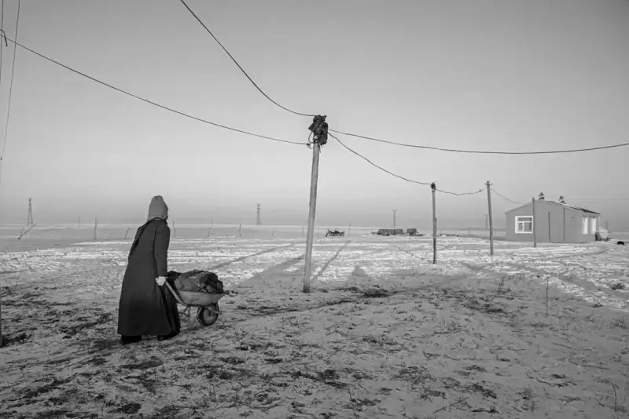
A woman carrying coal home for heating in winter
December 2019
Hulunbuir League, Inner Mongolia
Zhang Yue: I also saw online many portrait works you shot in India, Bangladesh, and other countries. Just from their weathered faces and quiet gazes, I feel a strong foreign character and visual effect. What kind of observation and imagination made you look at them this way? Why did you not use full or medium shots to show their living scenes? Why did you choose close-ups, and show only their faces and expressions?
Huang Hong:By the end of 2019, I had traveled to sixty-four countries outside China. In Bangladesh everyone believes in a religion. No matter how poor the material life, the people there are warm and simple. India is a country where luxury and poverty stand in strong contrast.
In life we meet many kinds of gaze. There is the trusting gaze of friends, the supporting gaze of comrades, the loving gaze of parents, the caring gaze of teachers, the gaze of classmates holding friendship, the gaze of patients who long for health, and the evil gaze of criminals.
Different gazes give different feelings. Every face holds a story. I tried, through these portraits, to tell the true spirit of the people of that country.
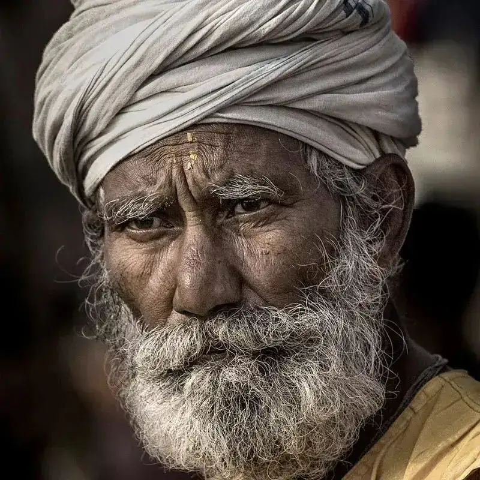
A sharp gaze
November 2014
India
Zhang Yue: I saw that you shot a short series called Bazaar in a market in the Kashgar region of Xinjiang, in a very short time. Although the time was short, you controlled the images well. They carry the feel of daily life, and they are not a simple record. They are a very selective shot. Apart from these, what else have you shot in Xinjiang? Have you followed other subjects or other content in Xinjiang for a long time?
Huang Hong:I have been to Xinjiang only four times, once to the north and three times to the south. The northern trip lasted twenty-three days. Each southern trip lasted fifteen days. At present I do not yet have the experience to follow southern Xinjiang subjects deeply. I am only recording them for a stage.
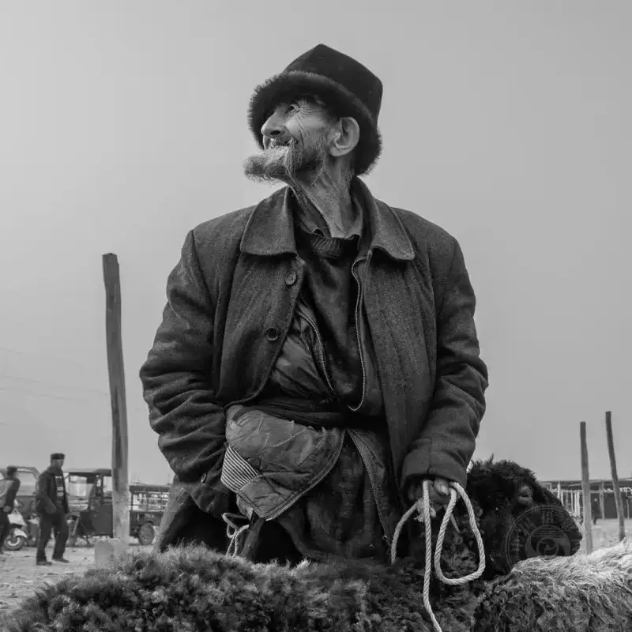
A herder waits for a buyer at the bazaar, with his flock for sale
March 2017
Kashgar, southern Xinjiang
Zhang Yue: In choosing and planning subjects, how do you decide on a new creative series?
Huang Hong:I have photographed people and things close to me. The coast, for example, is close because I live by the sea. It is something I can shoot as soon as I step out. My house used to be next to the sea. Now the land has been reclaimed, so I am a little farther from the shore. It is still a five-minute drive to the sea.
Or I shoot with friends who love photography. But as I shoot, I sort things out for myself. I judge which subjects speak to me, move me, and make me want to keep shooting.
Some industrial subjects I shot with friends, and some I found myself. As the work went deeper, some friends changed their interest. They felt it was no longer interesting and shot other things. But I kept on. This work moved me a lot. For example, I shot the Jinan steel plant. Five years later, some blast furnaces of the long-shut Jinan Steel were partly torn down. This former steel giant, this large state firm that Jinan took pride in, this glorious work of the industrial age, was about to leave for good. Goodbye, Jinan Steel. Goodbye, my youth. When I saw these words a friend had posted, I could not stop my tears.
With Xihaigu, I began only by wondering what kind of place was not fit for human life. My first trip shocked me with its gullies and empty land. The warm, simple people of Xihaigu touched me. They carry a backbone, which you could also call pride. They live purely. Wherever you see them, they look clean and energetic, not downcast at all. When I saw their deep bond with the land, food, and water, and their will to face hardship, overcome it, and live well, I kept shooting Xihaigu until now. I also went to the Daliang Mountains, but I gave it up later. Compared with the Daliang Mountains, I prefer the spirit of the Xihaigu people, who hold faith and purpose.
With rural work, I also visited villages in many Chinese provinces. In the end I chose Yuxian in Hebei. Shang Suzhuang Village belongs to Songjiazhuang in Yuxian. It is a typical example of the eight hundred fortified villages of Yuxian. It has 450 years of history. Its fortress walls, gate, and buildings inside are mostly intact. Shang Suzhuang carries the long, deep history of a traditional old village. It is also a lively Chinese village, and it keeps reviving. On each trip I find that it has changed. New elements appear, such as the wall at the village gate, which reads Splendid Rivers and Mountains. The appearance of this new kind of scenery gives me new material.
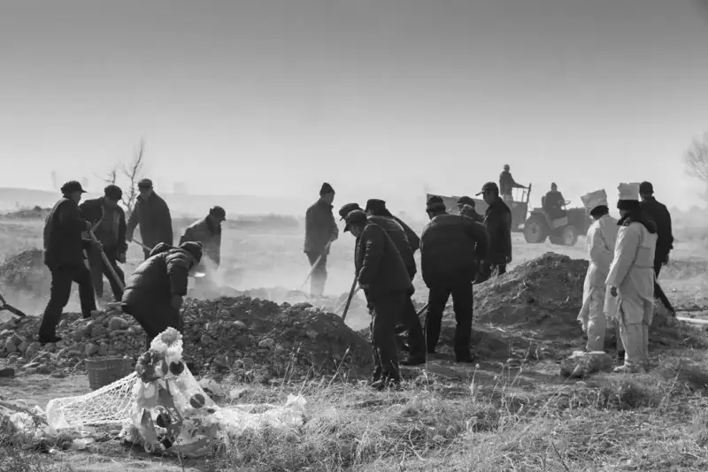
The funeral culture of rural Hebei will slowly vanish in the siege of commercialization and modernization, and become dust under the rings of the years.
February 2018
Shang Suzhuang, Yuxian, Hebei
Zhang Yue: It seems you still want to see a living spirit in people, a dignity and pride, a strength of character. What other working habits do you have, before the shoot, in the equipment you use during the shoot, and after the shoot?
Huang Hong:On long trips, I usually carry cameras with both long and short lenses. I prepare in advance. I do not only shoot portraits. I also record local customs, natural scenery, and old buildings.
As for specific gear, I rarely use a wide-angle lens for human-life series, because it distorts. I usually use a fixed 35mm lens or a 24 to 105mm zoom. That focal length is the most comfortable and quick to use.
After I return, I download the frames to the computer and keep two backups. Then I organize the notes. I send candid shots of the people I photographed back to them, and I stay in touch. At last I select frames according to the needs of the series. I do all the post-processing myself. It is very simple, and something I must know how to do.
Zhang Yue: I can feel the delicate, sharp observation in your work, and a quiet poetry in the images. Compared with similar work by male photographers, do you feel you show a more feminine side?
Huang Hong:I feel women photographers are perhaps more sensitive and more delicate. They can find the right point of focus. In shooting, they may bring more sharp observation and poetic expression. In real life, many women have many dreams. They always hope their life will be more colorful and rich. This is not a single case.
Zhang Yue: Over the years you have spent much energy and money on photography. I also see that you have published widely and won many awards. In economic terms alone, does what you get match what you put in?
Huang Hong:In general, my income is the opposite of my effort. I cannot even recover the cost of my equipment. I put in too much, and the return is tiny. I feel it is unfair, but I just smile and let it go. I am a photographer. My passion keeps me from chasing money too hard. I have no time to think about how to earn money. I spend most of my time creating and making work, and I gain spiritual joy. My main hope is to keep creating. A little income would help me update, add to, and maintain my gear. So if someone wants to get rich from photography, they had better open a shop. An artistic life rarely makes a rich dream come true. A photographer's work is very hard. You must be ready for it in your mind.
Zhang Yue: Does your family support your photography?
Huang Hong:They all support my travels to shoot. After every long trip, the first family meal is always with them, a welcome-home meal.
Zhang Yue: Can you tell me what subject you are shooting now? How is it going?
Huang Hong:As a photographer, I have shot many other people's lives. In recent years I want to shoot my own life. I want to record my father and mother as a participant, a witness, and a shooter. Life has many turning points. These points change the shape of our lives and our minds. As my parents age, and as the weight of the years grows, their health worsens. I want to record their lives more fully in the time I have.
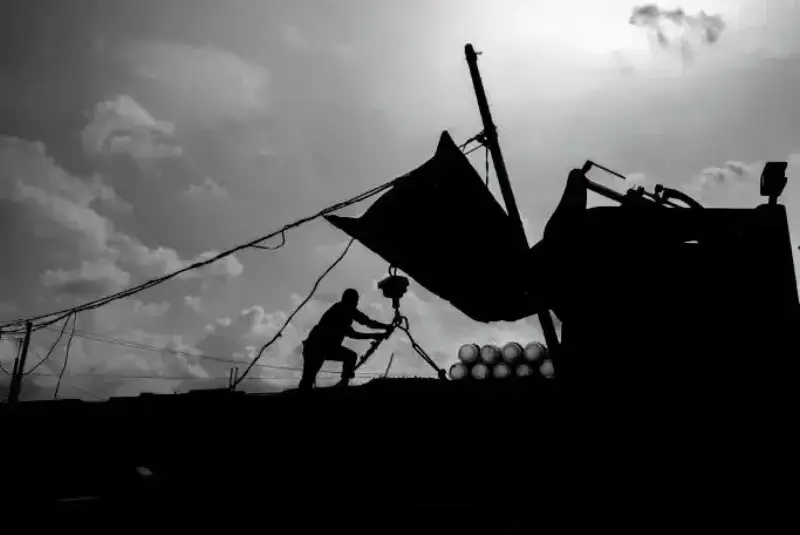
A fisherman securing his gear before a storm
September 2018
Xiyang Township, Wafangdian
I am also continuing some local subjects I shot before. For the last three years I have been organizing and adding to my past series. An industrial subject I have shot for nearly eight years is still being completed. The images and text of Twelve Years at the Fishing Port are being organized.
Decades of life pass in a flash. I hope to go with the flow. Based on the culture I have received, I want to shoot ordinary things with a calm mind. I want to make calm images with a calm attitude. Drawing on traditional Chinese cultural symbols, and basing my work on philosophical thought, I want to make images that belong to this era.
Zhang Yue: Thank you for this interview. I wish you even greater success in your work.
Zhang Yue
Reporter for China Photo Network,
Born in the 1990s, a woman who writes in Chinese, based in Beijing.
She has published hundreds of thousands of words of cultural criticism and political commentary.
She is now a master's student in photography and digital media at the graduate school of the Chinese National Academy of Arts.
She has a special love for documentary photography.